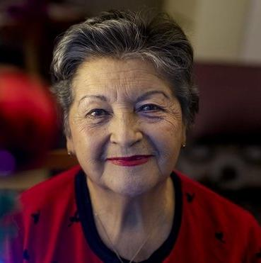

DESCOPERIRE INTERZISĂ: în 7 săptămâni globulele roșii artificiale ameliorează hipertensiunea, întăresc vasele de sânge și ridică incredibil imunitatea!

La filmarile unei emisiuni în cadrul platoului a izbucnit un conflict între participanți. Unul dintre experții invitați a fugit brusc de scenariu. Cu declarația sa, a uimit publicul din studiou, mai ales oficialii medicali.
Tensiunea! Iată cine este principalul ucigaș al oamenilor. Nu numai în Europa, ci în întreaga lume. Și voi toți pretindeți că așa ar trebui să fie. Neglijați instrumentele avansate care rezolvă această problemă o dată pentru totdeauna.
Bolile cardiovasculare sunt liderul mondial al bolilor ce duc la deces. 94% din atacurile de cord și accidentele vasculare cerebrale apar din cauza hipertensiunii arteriale. În 89% din cazuri, hipertensiunea arterială cu atac de cord și accident vascular cerebral se termină cu deces. Dacă vorbim despre valori specifice, hipertensiunea arterială este cauza a aproximativ 77-78% din toate decesele. Aceasta este aproximativ 1,5 milioane de decese în anul .
“Люди умирают из-за изношенного сердца и сосудов! Запомните это раз и навсегда!” — утверждал Александр Мясников, один из приглашенных экспертов, но другие участники буквально накинулись на него, затыкая ему рот.
Статистика шокирует! От проблем с сосудами и сердцем за это же время умерло почти 500 000 жителей Европы.
В студии началось замешательство. Эксперты начали спорить, перебивая друг друга. Эфир спешно остановили и быстро пустили рекламный блок. Александр Мясников не стал терпеть и покинул студию.
Зрители запомнили этот инцидент надолго.
Мы решили провести расследование и взять у Александра Мясникова отдельное интервью.
На ваши вопросы отвечает: Александр Леонидович Мясников
Советский и российский врач-кардиохирург, изобретатель, организатор медицинской науки, профессор. Академик РАН (2011) и РАМН (1994), член Президиума РАМН (до 2013). Главный внештатный специалист сердечно-сосудистый хирург России. 48 лет в медицинской сфере.
Соловьёв: "Александр Мясников, о скандале на ТВ знают кажется все ваши коллеги. Как вы не побоялись такого поступка?"
Мясников: Я понимал все риски, но я просто не мог больше молчать. Нельзя переливать из пустого в порожнее и не предлагать конкретного лечения. Я врач, я давал клятву Гиппократа и следую ей. И я очень рад, что вы снова связались со мной, потому что смогу повторить свои слова. Жадность и продажность людей сейчас просто зашкаливает.
Соловьёв: "О чем конкретно вы говорите?"
Мясников: О том, что существуют заболевания, которые в нашей медицине принято лечить годами. Я работаю с сердечно-cосудистыми заболеваниями, занимаюсь реабилитацией людей перенесших инфаркты и инсульты. И в моей области обман сплошь и рядом.
Уверен, что также и в лечении опорно-двигательного аппарата, ЖКТ, да что угодно можно лечить по симптомам, облегчая состояние, но не возвращая полного здоровья.
И виной тому фармкорпорации и их медпредставители, которые подкупают врачей по всей Европе.

Сосуды и давление у нас не лечат
Соловьёв: "То есть вы хотите сказать, что все современные лекарства от гипертонии не эффективны?"
Мясников: Лекарства от давления, которые официально выписывают людям, выполняют одну важную функцию – перекачивают деньги из карманов больных в карманы медицинских олигархов.
Это узаконенные наркотики. Посудите сами. Больной принимает таблетку, его состояние улучшается. Действие препарата прекращается и давление снова растет. Так действуют все наркотики. Чтобы чувствовать себя хорошо, нужно искать новую "дозу".
Главное поймите вот что: в экстренных ситуациях "химические" препараты нужны и важны. Они спасают жизни, когда нужна срочная помощь. В первую мировую войну, например, на поле боя использовали героин, чтобы раненые не умирали от болевого шока.
Но если постоянно пить таблетки, то они разрушают организм. Точно так же как героин. Не так быстро, но принцип действия такой же. А чтобы избавиться от побочных эффектов, вам продадут еще таблеток. И ещё. И ещё. Чем больше, тем лучше аптекам и фармакологическому бизнесу.
Соловьёв: "Но ведь люди живут годами на лекарствах!"
Мясников: Наркоманы тоже могут жить довольно долго. Но что это за жизнь?
Когда болят суставы. Когда не старые мужики, чуть за 50, зарабатывают простатит и теряют потенцию. Когда отказывают почки и начинают мучить отёки. Сначала отекают ноги, так что ходить можно с трудом. Потом внутренние органы. Да так, что живот становится бочкообразным.
Некоторые таблетки, при длительном приёме вообще являются онкогенными. Посмотрите на статистику по раковым заболеваниям – вот она настоящая эпидемия.
Я уже не говорю про такие мелочи, как проблемы со сном, шум в ушах, потеря зрения и слуха. Перечислять можно долго. А причина одна – изношенные грязные сосуды, которые никто не лечит. Хотя средство уже есть и оно показывает отличные результаты.
Соловьёв: "На съемках передачи вы пытались рассказать о прорывном средстве для лечения давления и сосудов, но вас буквально не слушали. Что это за средство? Почему представители аптек реагируют на его название, словно вампиры на солнечный свет?"
Мясников: Я начал говорить про биопрепарат «Cardiofort». Это уникальное средство на базе живых растительных витамолекул.
Cardiofort - это разработка Немецкого центра молекулярной биологии. Его ещё частно называют "Искусственными красными кровяными тельцами". Потому что, средство стимулирует выработку молодых красных кровяных клеток, которые занимаются чисткой и "ремонтом" сосудов.
Cardiofort очищает сосуды, и стабилизирует давление на годы. Его не нужно принимать постоянно. Всего за 7 недель он полностью восстанавливает сосудистую сеть и давление будет 120 на 80 следующие 5 лет.
За разработку этого средства коллектив наших учённых получил международную премию по терапевтической биологии. За инновационный прорыв в лечении гипертонии и сосудистых патологий.
Казалось бы, после такого признания, аптеки должны в очереди стоять за право продавать Cardiofort. Государство должно взять на вооружение этот препарат. Но нет, полная, гробовая тишина. Никто как-будто не заметил прорыва.
А представители медицинского бизнеса, так и вовсе с ненавистью относятся к препарату. У них сотни наименований лекарств, планы по продажам и выручке. А одним Cardiofort эти планы не выполнить. Люди после 7 недель лечения забывают дорогу в аптеку.
Поэтому такая ненависть к Cardiofort. Очернить его не получается. Все-таки есть международное признание, сертификаты, научные статьи, тысячи довольных пациентов. Поэтому была выбрана стратегия бойкота. Сделать вид, что Cardiofort не существует. А когда я начал о нем говорить в эфире, это вызвало неприкрытую агрессию в мой адрес.
Запуск самоисцеления организма
Соловьёв: "От чего помогает Cardiofort?"
Мясников: Главная цель Cardiofort - восстановление сосудов. Это фундамент, на котором стоит ваше здоровье.
Cardiofort восстанавливает сосуды в 3 этапа:
- Расщепляет холестериновые бляшки.
- «Ремонтирует» повреждения стенок сосудов.
- Улучшает проводимость нервных импульсов от головного мозга.
Восстановление кровотока и укрепление стенок сосудов запускает цепную реакцию восстановления организма. Запускаются скрытые иммунные силы и организм начинает лечить сам себя.
Этот процесс самовосстановления называется ауторегенерация. Эти механизмы заложены природой, а Cardiofort это катализатор, ключ, который "заводит" ауторегенерацию.
Избавьтесь от 7 болезней за 7 недель
Соловьёв: "Что вы получите после курса лечения Cardiofort?"
1. Давление, как у космонавта.
Во-первых это полное избавление от гипертонии. После 7 недель регулярного приёма Cardiofort полностью обновляется сосудистая сеть организма. Сосуды становятся эластичными и прочными. Другими словами сосуды оживают и без проблем "гасят" колебания давления крови. Будь то из-за нервов или из-за физической нагрузки обновлённые сосуды компенсируют любой перепад и будут держать стабильное давление 120 на 80.
2. Улучшение работы мозга.
После курса Cardiofort на 73% улучшается мозговое кровообращение.
Пациенты с восторгом отмечают что у них:
- Улучшается память.
- Нормализуется сон, пропадает вялость и слабость.
- Перестаёт шуметь в ушах.
- Прекращаются головные боли.
3. Улучшает остроту зрения, восстанавливает роговицу.
Cardiofort очищает не только крупные сосуды и артерии, но и мельчайшие капилляры. Их особенно много в глазах. Это приводит к обновлению клеток сетчатки и улучшению мышечного тонуса глаз.
- Улучшается острота зрения от 0.5 до 2.1 ед.
- Нормализуется глазное давление.
- Уменьшаются симптомы катаракты.
4. Проходят отёки.
Восстанавливается правильная работа почек и жидкостный обмен в организме. Почки перестают задерживать воду, и отпадает необходимость принимать мочегонные.
- Перестают болеть и отекать ноги.
- Уменьшается живот, потому что спадают отёки органов.
- Уходит жидкость из легких, становится легче дышать.
5. Геморрой и простатит не побеспокоят.
Самые ярко выраженные болезни из-за сосудов:
- Варикоз.
- Геморрой.
- Простатит.
- Импотенция.
6. Восстанавливает сердце.
Очищение аорты благотворно влияет на тонус сердечной мышцы. В 93% случаев проходит тахикардия, в 99% излечивается ишемия.
- Нормализуется сердечный ритм и пульс.
- Проходят боли в сердце.
- В 17 раз снижается риск инфаркта.
7. Начинает работать иммунитет.
Улучшается кровоснабжение костного мозга, который занимается производством иммунных клеток. Это приводит усилению защитных сил организма.
Иммунитет это защитник не только от вирусов. Главная функция сильного иммунитета - защита от раковых клеток. Сильный иммунитет вовремя распознает и уничтожает раковые клетки. Не дает появится полноценной опухоли.
Иммунитет, который работает хотя бы на 50% уже является непреодолимой преградой для вирусов. А это сегодня тоже очень важно.
Председатель союза аптекарей бросил трубку, услышав про Cardiofort
Игнатян Рустам Мамедович. Председатель союза аптечных сетей Европы.
Мы позвонили главному аптекарю страны и хотели узнать, почему ни в одной аптеке нет Cardiofort.
– Рустам Мамедович, здравствуйте! Скажите, пожалуйста, почему российские аптеки игнорируют препарат Cardiofort? Вы слышали про него?
– Зачем вы занимаетесь провокациями!? Я не собираюсь отвечать на такие вопросы!!! Это вообще не ваше дело!
– Гудки...
Как получить Cardiofort
Соловьёв: "После такого разговора с главным аптекарем страны, стало понятно, что в аптеках Cardiofort нет и не будет. Но получить его все-таки можно, ведь так?"
Мясников: Да, все граждане Европы могут выписать Cardiofort через интернет напрямую с завода. Кроме некоторых регионов, которые очень злоупотребляли спекуляциями.
Соловьёв: "Почему Cardiofort можно выписать только через интернет?"
Мясников: Это сделано по трём причинам:
- Гарантия качества. Cardiofort отправляют прямо с завода покупателю.
- Защита от посредников. Чтобы никто не мог накрутить тысячи Евро на перепродаже.
- Быстрая адресная доставка.
Получите Cardiofort прямо сейчас!
Мясников: Чтобы получить скидку до 50% на Cardiofort, по программе социальной поддержки, нажмите на любую коробку ниже, чтобы открыть скидку.
Время проведения акции - с года до года (включительно)! После чего препарат можно будет купить только по рыночной стоимости, которая составляет 400 евро за упаковку.
ВНИМАНИЕ: В рамках акции от дистрибьютора до года (включительно), Cardiofort можно получить с 50% скидкой. Для этого нужно открыть коробку и получить скидку, а далее заполнить появившуюся форму заказа. Количество акционных товаров ограничено.

↓
Откройте коробку со скидкой до 50%!
↓

Попробуйте ещё раз!

Заполните форму, чтобы получить курс препарата «Cardiofort»
с 50% скидкой
Все что Вам нужно — это ввести имя и номер телефона.
Поторопитесь! У Вас осталось времени:
10 : 00
Поторопитесь! У Вас осталось времени:
10 : 00
Используется шифрование для гарантированной защиты ваших данных.
Поздравляем!
OK
Вы можете забрать курс Cardiofort
С 50% СКИДКОЙ
Обсуждение
127 пользователей
оставили 203 комментария

Марина Ротбауэр
Заказала по акции, выпала скидка 90%, вышло все равно копейки! Привезли на второй день курьером. Давление мучало очень сильно. Сейчас все в порядке, аж не верится.

Гитта Дункле
Я бы всех министров разогнала, врут постоянно, пляшут под дудку тех, кто им бабки отсыпает!! Я восхищаюсь храбростью этого врача, но сдается мне карьеры у него больше не будет.

Ксения Белинская
Если бы не вы никогда бы не узнала о Cardiofortе. И наверняка через пару лет умерла. Вы бы видели
меня раньше...
Посылка кстати пришла очень быстро. Cardiofort теперь у нас всегда в аптечке.

Петер
Я много лет страдал гипертонией, доходило до потерь сознания, на работе уже даже привыкли. Чуть изменения погоды - скачет давление, поволновалась - все, сразу без сил. Ночью настигала тахикардия. Врачи постоянно пугали возможностью инсульта, ведь сосуды не выдерживают таких колебаний. Было очень страшно, ведь от инсульта погибла моя жена. Про Cardiofort узнал случайно, наткнулся на упоминание в статье и решил попробовать. Уже несколько месяцев, как забыл о слабости и прыжках давления. Чувствую себя бодрым и как будто даже помолодевшим. Я всем рекомендую!

Frieder Lehmann
Когда начал пить Cardiofort, даже не представлял, что эффект окажется таким. Прошли боли в голове (головокружения), исчезла одышка, сошли все симптомы. И сейчас в свои 53 года могу дать фору многим 30-летним. Спасибо громадное Вам, что открываете глаза людям, рассказывая им о проблеме. От участкового терапевта такого не услышишь.

Сергей Баранцев
Недавно смотрел передачу по телевизору про гипертоников. Там про это средство рассказывали, хвалились, что у нас создали лучшее средство в мире для чистки сосудов. По моему даже министр какой-то был.

Наталия Дмитриева
Тоже заказала, успела по акции, выпало 50% скидка! Обещали в течение 2-х дней доставить, сказали что не переплачу этим мразям в аптеках, жду с нетерпением!

Sergii Brainmann
Давно мучился головными болями. Давление скакало, пропил это средство пару недель, все ушло. Спасибо.

Ирина Плахотник
Давно думала о чистке сосудов, не могла найти нормальное лекарство. Это вроде бы достойное и еще Мясников его рекомендует. Ему я доверяю, это человек с большой буквы.

Мария Шмид
А это не развод? Почему в Интернете рекламируют?

Михаил Рябрев
Присоединяюсь к рекомендациям. Когда начал пить - в первые дни уже чувствовал результат. Всем
советую Cardiofort.


Florian
Мария, Вы статью читали вообще? В Интернете все есть, потому что в аптеках - хапуги и хотят даже на этом заработать! Да и какой тут может быть развод, если оплата после получения, а по акции вообще можно выиграть курс со 50% скидкой? Я заказывал - мне по почте пришло, я все проверил, посмотрел, пощупал и потом забрал. Да и в Интернете сейчас многое есть - от одежды и обуви до техники и мебели.

Марат Звягинцев
Пили Cardiofort с женой и у обоих значительные улучшения самочувствия. Действительно как будто помолодели, стало больше сил. Давление пришло в норму. Головных болей больше нет. Спасибо огромное!

Алена Захарова
Попала в больницу из-за высокого давления. Лечили 3 месяца меня. Толку никакого. Посадили на Энап. Пила еще пол года его. Потом увидела как-то по телевизору передачу, рекомендовали Cardiofort! Господи, волшебное средство. Уже как год не было симптоматики гипертонии. Пропила всего месяц Cardiofort. Спасибо производителю громадное! Низкий поклон.

Светлана Брандт
Лечусь Cardiofort уже второй месяц, соседка принесла. Все устраивает. Давление почти не беспокоит. Спасибо создателям этого лекарства!


Неле Крамер
Заказывала Cardiofort родителям еще до всяких льгот. Оба у меня гипертоники. Средство бомбезное! Уже в первые дни они перестали пить аптечные препараты и травить свой организм! Давление пришло в норму. Теперь рекомендую Вам Cardiofort!